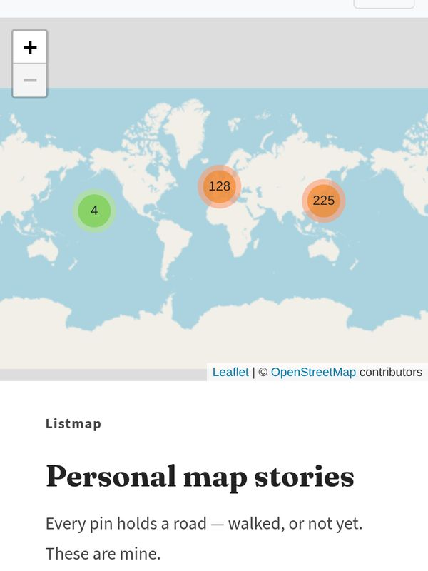
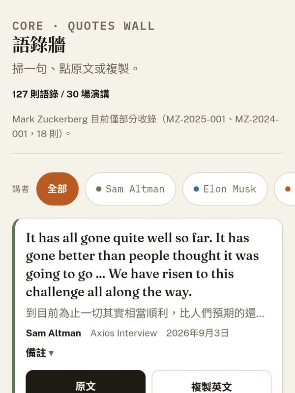
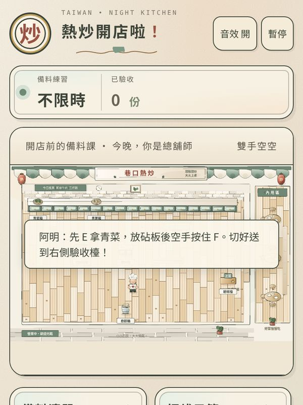
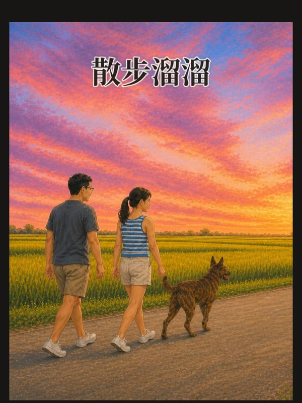
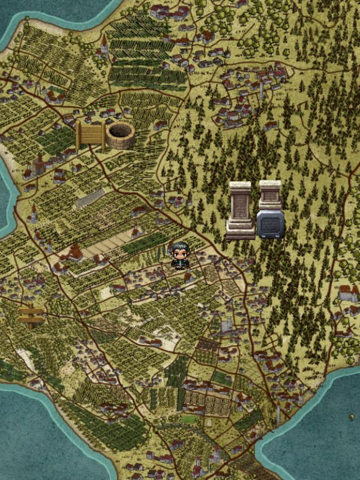
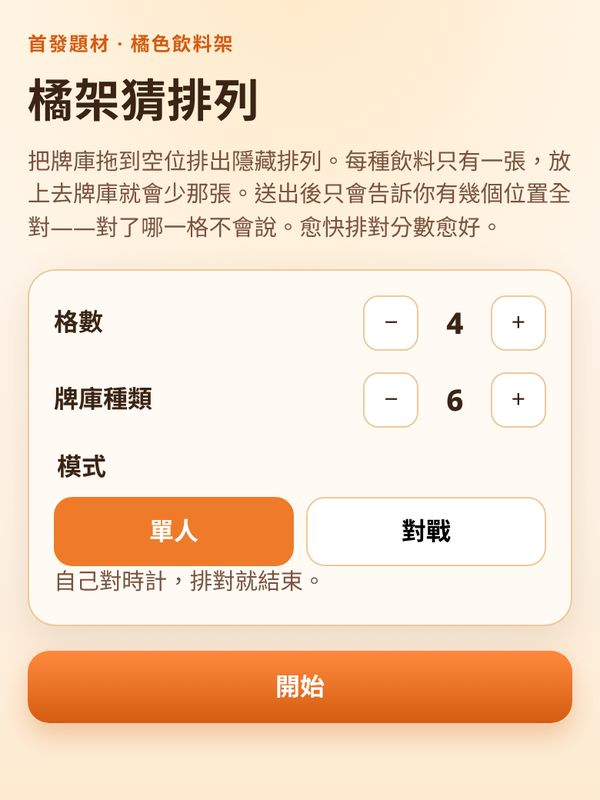
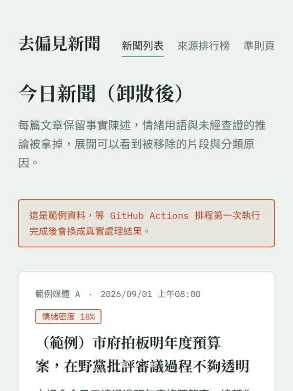

I use AI to turn ideas into prototypes you can click.
Product-minded builder · Hsinchu, Taiwan. Tap a screenshot to open the project.
Projects
-
白話科技
Tech explainers · 22 posts
-

Listmap
Map stories
-

Celebrities
Quote wall · word cards
-

熱炒開店啦
Browser game
-

溜溜繪本
Picture book · print pending
-

IlhaHometown
Interactive map of 芎林
-

橘架猜排列
Puzzle game
-

正常新聞
Daily paper · tech edition
-
登山路線比較
Hiking elevation profiles
-
嘉明湖 2026
Trip story with maps
-
手錶按鍵模擬器
Garmin button simulator
About ioksengtan
I'm a product-minded builder who uses AI to turn ideas into interactive prototypes quickly. I'm good at starting from a fuzzy spark of inspiration, letting AI produce a first version I can actually look at, and then using my product sense, a user's perspective, and my taste in content to correct course, before finally pushing it forward into a website, a game, a content system, or a workflow.
My strength isn't writing implementation line by line. It's judging what's worth building, how people will actually use it, and where it falls short of expectations, and then turning those judgments into concrete changes, for example in Listmap map stories, the rechao stir-fry restaurant game, CEO English vocabulary cards, a food inspiration library, and knowledge content websites.
I work with AI the way a product director works with a high-speed engineering team: I let agents handle the bulk of the implementation and organizing, but I keep the final say on product truth, style, experience, and release cadence. Going forward, if I formalize planning before each task, completion criteria, and review before each commit, my speed will more readily turn into consistent quality.
A résumé is not published on this site. The repos are the public record.